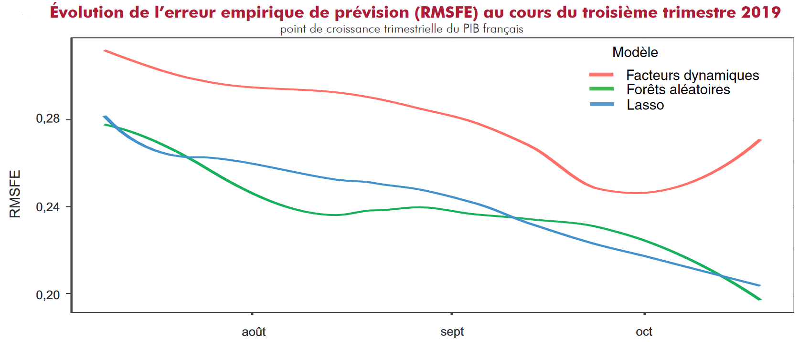
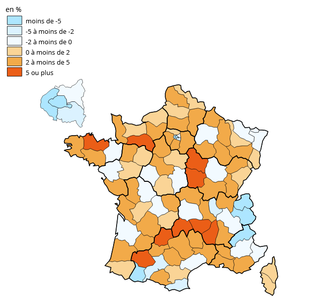

Présentation des sources big data à l’Insee
BCEAO - Jour 2
26 septembre 2023
1️⃣ Les différentes données utilisées à l’Insee
La collecte directe : les enquêtes
- Informations collectées auprès d’individus , de ménages ou d’entreprises selon des méthodes structurées et standardisées
- Échantillon représentatif ou au hasard
- Collecte via questionnaires, interviews ou plus récemment internet
- Sources traditionnelles des instituts statistiques
- Exemples : enquête Emploi, enquête conjoncture, recensement de la population…
L’enquête Emploi
- Panel rotatif (90k pesonne/ trimestre pendant 6 mois)
- Objectif principal : calculer le taux de chômage

La collecte directe : les enquêtes
- Avantages :
- Contrôle total des questions posées et personnes interrogées
- Désavantages :
- Coûts très importants
- Contraignant pour l’enquêteurs et les enquêtés
- Baisse tendancielle du taux de réponse
Les sources administratives
- Informations collectées via les registres administratifs ou comptables
- De plus en plus utilisées par les agences de statistiques publiques
- Leurs volumes, leurs vélocités sont souvent caractéristiques de Big Data
- Exemples : la déclaration sociale nominative (DSN), le Système National des Données de Santé (SNDS)…
La Déclaration Sociale Nominative (DSN)
- Objectifs principaux :
- Simplifier les formalités déclaratives : une seule déclaration
- Fiabiliser et sécuriser les déclarations : dématérialisation et obligation mensuelle
- Source de données extrêmement riche
La Déclaration Sociale Nominative (DSN)

Informations contenues dans la DSN
Les sources administratives
- Avantages :
- Coût de collecte plus faible
- Charge allégée pour les personnes ou entreprises enquêtées
- Biais de non-réponse ammoindri (collecte souvent automatique)
- Fréquence de collecte plus rapide et donc volume plus élevé (e.g. SIDEP pendant le Covid)
- Données plus fines
- Complémentaires aux données d’enquêtes
Les sources administratives
- Désavantages :
- Contrôle réduit sur l’échantillonage (problèmes de représentativité et biais de sélection)
- Contrôle réduit sur la collection des données (incohérence et erreurs)
- Confidentialité pouvant réduire le partage des données conventions nécessaires
- Sources potentiellement moins pérennes dans le temps (modifications législatives, modifications de consignes)
Les sources administratives : Fondement juridique
- Dispositif juridique rigoureux
- Recours possible depuis 1986 (modification Article 7 bis de la loi du 7 juin 1951)
- Transmission obligatoire lorsqu’elle émane d’une demande du ministre chargé de l’économie + avis positif du Cnis
- Données protégées par le secret statistique (Article 7 ter de la loi du 7 juin 1951)
Les données émergentes
- Ensemble de données non traditionnelles à la statistique publique
- Complètent, enrichissent ou renouvèlent les statistiques publiques
- De + en + de données privées ➡️ l’État ne détient plus le monopole de la production de la données
Les données émergentes
- Exemples :
- Données transactionnelles ou comportementales : transactions CB, téléphonie mobile, données de géolocalisation…
- Données issues d’internet (webscrapping) : offres d’emploi, google trends…
- Images satellites
Note
Données émergentes ➡️ souvent caractéristiques du Big Data
Les données émergentes à l’Insee
- Une seule statistique est régulièrement produite grâce à des données privées : l’IPC
- 3 sources de données utilisées pour produire l’IPC :
- Les enquêtes
- Les relevés de prix dématérialisés (webscrapping, bases de données d’institutions…)
- Les données de caisse
Les données émergentes
- Avantages :
- Rapidité : temps réel ou quasi temps réel
- Volume : souvent données massives
- Complémentarité : appui aux données traditionelles
- Désavantages :
- Aucun contrôle sur l’échantillonage et la collection des données
- Accessibilité limitée ou coûteuse
- Quantité \(\neq\) Qualité
Les sources émergentes : Fondement juridique
- Recours possible depuis 2016 (Article 3 bis de la loi du 7 juin 1951) sous des conditions très strictes :
- Consultations et étude de faisabilité/opportunité préalables à la décision
- Confidentialité des données assurée
- Utilisation des données fixées par voie réglementaire
2️⃣ Retour d’expérience sur l’apport des données émergentes
A. Les données de caisse pour mesurer les prix à la consommation
Contexte
- L’IPC est calculé à partir de \(200 000\) relevés mensuels dans des points de vente
- Complété par \(+190 000\) prix mensuels provenant de sources administratives ou webscrapping
- Depuis janvier 2020 une nouvelle sources :
- Les données de caisse : \(\approx 1,7\) milliards d’enregistrements par mois
Une opportunité pour le calcul de statistiques de prix
D’autres INS plus précurseurs : Pays-Bas (2002), Norvège (2005), Suisse (2008), Suède (2012), Belgique (2015), Danemark et Islande (2016), Luxembourg et Italie (2018)
Entrée dans l’ère du Big Data : prise en compte des opportunités et limites
Exhaustivité des données et potentielles nouvelles informations
A quoi ressemblent les données ?
- Collectée en continu et centralisées selon un pas journalier
- Quantités vendues et prix du produit pour chaque code barre enregistré
| ID Point de vente | Date | Heure | Produit | EAN | Prix unitaire (€) | Quantité | Total (€) |
|---|---|---|---|---|---|---|---|
| 123 | 2023-08-01 | 10:15 | Pommes | 1234567890123 | 1.50 | 3 | 4.50 |
| 123 | 2023-08-01 | 11:30 | Bacon (150G) | 2345678901234 | 2.00 | 2 | 4.00 |
| 234 | 2023-08-01 | 13:45 | Yaourt nature | 3456789012345 | 1.25 | 5 | 6.25 |
| 345 | 2023-08-02 | 09:20 | Feuilles A4 | 4567890123456 | 0.75 | 2 | 1.50 |
| 456 | 2023-08-02 | 12:00 | Jus d’orange | 5678901234567 | 3.50 | 1 | 3.50 |
| 234 | 2023-08-02 | 15:30 | Chips au maïs | 6789012345678 | 1.00 | 3 | 3.00 |
Des statistiques plus précises et plus détaillées
- Disponibilité journalière très utile : contrainte de publications de l’IPC
- Production d’indices sur des segments de consommation très spécifiques
- Échantillons sur des espaces géographiques très fins ➡️ vers des indices régionaux
- Identification des effets de substitution
- Production d’indices de prix plus proches du ressenti des ménages
- 💲 Une réduction des coûts importante pour l’Insee !
Un long chemin pour accéder aux données de caisse

Retour d’expérience
- Sources parmi les plus prometteuses car substituables
- Nouveaux partenariats noués pour assurer la pérénité
- Données de caisse : 2 V (Vélocité, Volume)
- Des contraintes fortes :
- Accès long et difficile aux données
- Nouvelle architecture informatique indispensable
- Automatisation des processus statistiques nécessaire (la classification, l’identification des relances, le remplacement des produits)
B. Webscrapping
Contexte
- Objectif identique : améliorer l’IPC
- Les données de caisse ne suffisent pas :
- Pas une solution pour prix des services
- Produits sans code-barre
Un exemple : les prix dans le domaine de l’hôtellerie
- Etude réalisée par Adrien Montbroussous, Camille Freppel et Ombéline Guillon
- Papier et présentation détaillée accessibles ici et ici
- Objectif : améliorer l’indice des prix dans le secteur de l’hôtellerie
- Code source pour le webscrapping des prix disponible en open-source
Un exemple : les prix dans le domaine de l’hôtellerie
- Le poste location de chambres : \(0,8 \%\) de la consommation du panier de l’IPC en 2021
- Prix collectés sur le terrain par des enquêteurs :
- Du lundi au vendredi, une fois par mois pour le jour même
- Pour une nuitée pour 2 personnes avec 2 petits-déjeuners
Un exemple : les prix dans le domaine de l’hôtellerie
- Problèmes :
- Pas de prise en compte des réservations en avance
- Pas de prise en compte de la hausse de la consommation sur internet
- Certaines zones touristiques ne sont pas bien représentées
- Aucun prix collecté pour les nuitées du samedi et du dimanche soir.
Webscrapping de Booking permet de contrecarrer ces problématiques
D’autres expérimentations
- Indice des prix des articles électroniques : webscrapping de Boulanger et rue du commerce
- Code open-source
- Indice des prix du transport en train : webscrapping de la SNCF
- Pris en compte dans l’indice de l’IPC depuis 2020
Limites du webscrapping
- Dépendance au site internet
- Des interruptions de collecte dûes à des changements des sites web
- Maintenance des codes coûteux
- Fondements juridiques importants
C. Prévoir en continu la croissance française
Contexte
- Objectif double: améliorer et anticiper la première estimation du PIB
- Estimation publiée 1 mois après la fin d’un trimestre
- Multiplicité de sources de données aux dates de publications disparates :
- Estimation en continu
- Nouveaux outils de prévision
Une diversité de sources de données à haute fréquence
- Enquêtes (qualitatif) et indices (quantitatif) comme principaux indicateurs
- Délais de publication différents (entre 25 et 90 jours) :
- \(\approx 1\) nouvelle publication tous les 3 jours
- Données produites par l’Insee, la Banque de France, l’OCDE, Markit ou des SSM
- Données Big Data se sont avérées peu efficaces (articles de presse, recherches sur les moteurs de recherche, données des réseaux sociaux)
De nouveaux outils indispensables
- Problèmes méthodologiques :
- Aggrégation de données de fréquences et dates de publication différentes
- Nombre de variables \(\gg\) Nombre d’observations
- Comparaison de méthodes macroéconomiques traditionnelles (ARIMA, modèles à facteurs dynamiques) aux méthodes d’apprentissage automatique (Lasso, forêts aléatoires)
Pour quels résultats ?
- Prévisions proches mais volatilités des modèles différentes
- Les erreurs de prévisions diminuent au cours d’un trimestre
- Données les plus volatiles utiles qu’en présence de choc majeur (Covid, guerre Ukraine)
D. Les données mobiles pour la statistique publique
Contexte
Difficultés à estimer la population présente sur le territoire
Les données mobiles permettent d’inférer des positions probables
- Comptages agrégés sur le territoire
Plusieurs applications
- Mesure de la ségrégation spatiale
- Adaptation de l’offre sanitaire et sociale
- Mouvements de population au moment du confinement (covid)
Pourquoi estimer la répartition de la population ?
- Répondre au besoin des acteurs publics locaux : avis du Cnis sur les statistiques de population présente et non plus résidente
- Un champ de recherche prometteur : utilité pour la statistique publique reconnue par le SSE
- Nouveaux partenariats créés
- Le contexte d’urgence : production de statistiques très rapide (8 avril pour un confinement le 17 mars)
Les données utilisées
Données fournies par un unique opérateur : Orange
- Données massives (> 1To par jour)
Comptages de présence dans chaque département croisés avec le département de résidence
Localisation à partir des antennes auxquelles un mobile se connecte
Important
Les données utilisées permettent seulement d’effectuer des comptages par zones à différentes dates.
Résultat
Taux d’évolution du total des nuitées par département de présence avant et après le début du confinement
Confidentialité
Aucune information directement identifiante présente dans les données
Méthodologie de l’opérateur connue et validée par l’Insee :
- Échanges confidentiels et transparents
- L’Insee s’assure de la validité du secret statistique
Et maintenant ?
Plusieurs caps identifiés :
- Indépendance vis-à-vis des opérateurs : biais statistique ?
- Cadre européen sur l’exploitation des données mobiles :
- la qualité des statistiques publiées
- respect de la vie privée des détenteurs de mobiles
- Approfondir la méthodologie : projet Mobitic
- Production de nouvelles statistiques (déplacements domicile-travail, accroissement du télétravail…)
E. Données carte bancaire
- Données Carte bancaire CB recouvrent 82% des opérations
- Données agrégées par jour, type de paiement ou département
- Plusieurs exploitations réalisées :
- conjoncture agrégée (consommation des ménages)
- conjoncture désagrégée (consommation par secteurs)
- comportements des consommateurs liés à des chocs (confinement)
- production statistique (réduction de la volatilité des estimations)
Autres sources émergentes étudiées à l’Insee
Améliorer le recensement à l’aide de images satellites
- Utilisation d’images satellites (Pleiades, Sentinel)
- Détecter les apparitions/disparitions d’habitations
- Méthodes de deep-learning :
- Segmentation d’image
- Détection de changements
- Détection d’objets
Indice de prix des loyers grâce aux site d’annonces
- Construction indices des loyers à partir des données de SeLoger
- Partenariat échanges des données / apport méthodologique
- Objectif : valorisation grâce à un outil visuel interactif
3️⃣ Conclusion
Le Big Data à l’Insee
- Le terme de Big Data recouvre un ensemble de sources très disparates
- Le secteur des prix est apparu le plus prometteur pour l’Insee :
- Données relativement structurées rappellent les données traditionnelles
- A l’Insee, choix de la complémentarité plutôt que de la substituabilité
- Les données quasi exhaustives ouvrent la voie à des statistiques locales ou spécifiques plusieurs travaux expérimentaux en cours
Big Data et secret statistique
- La vie privée et le secret des affaires nécessitent une attention particulière
- L’accès aux données doit être encadré par un cadre légal clair et durable
- En France, la loi pour la République numérique offre ce cadre juridique les données privées susceptibles de se substituer aux données d’enquêtes peuvent être réquisitionnées par l’Insee